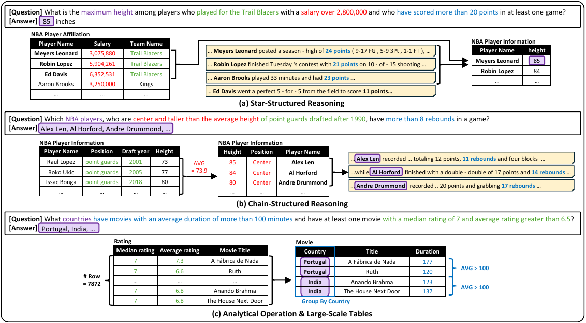
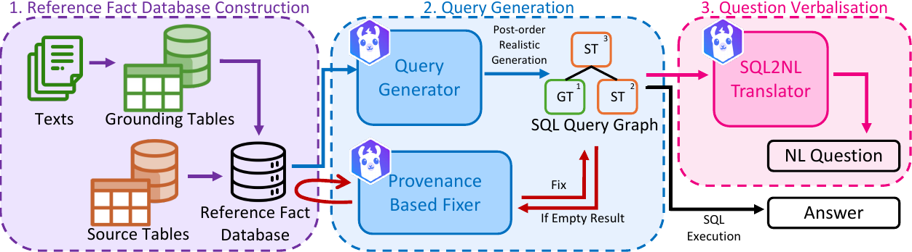
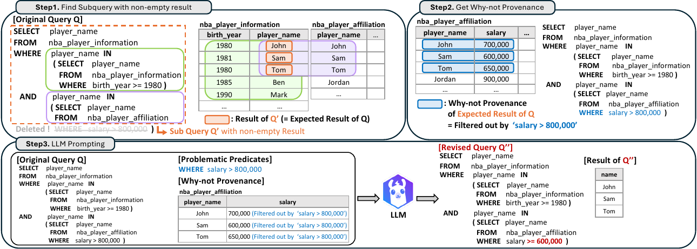
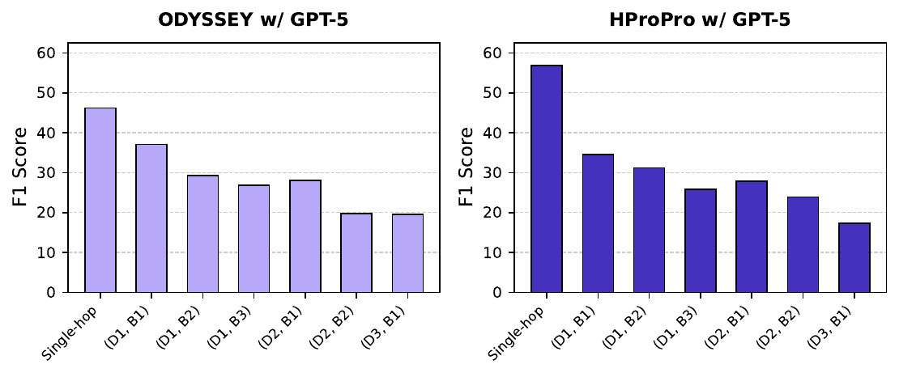

SPARTA
Scalable and Principled Benchmark of
Tree-Structured Multi-hop QA over Text and Tables
Abstract
Real-world Table-Text question answering (QA) tasks require models that can reason across long text and source tables, traversing multiple hops and executing complex operations such as aggregation. Yet existing benchmarks are small, manually curated—and therefore error-prone—and contain shallow questions that seldom demand more than two hops or invoke aggregations, grouping, or other advanced analytical operations expressible in natural-language queries.
We present SPARTA, an end-to-end construction framework that automatically generates large-scale Table-Text QA benchmarks with lightweight human validation, requiring only one quarter of the annotation time of HybridQA. The framework first constructs a reference fact database by enriching each source table with grounding tables whose tuples are atomic facts automatically extracted from the accompanying unstructured passages, then synthesizes nested queries whose number of nested predicates matches the desired hop count.
To ensure that every SQL statement is executable and that its verbalization yields a fluent, human-sounding question, we propose two novel techniques: provenance-based refinement, which rewrites any syntactically valid query that returns a non-empty result, and realistic-structure enforcement, which confines generation to post-order traversals of the query graph.
On SPARTA, state-of-the-art models that reach over 70 F1 on HybridQA or over 50 F1 on OTT-QA drop by more than 30 F1 points, exposing fundamental weaknesses in current cross-modal reasoning.

Figure 1: Representative examples from the SPARTA benchmark showing multi-hop reasoning across tables and text with varying query structures.
Key Contributions
Reference Fact Database
Unifies heterogeneous evidence (tables + text) inside a single relational store, making all facts uniformly queryable via SQL.
Provenance-Based Refinement
Uses "why-not provenance" to identify and fix overly selective predicates, ensuring every generated query returns valid results.
Realistic-Structure Enforcement
Constrains generation to post-order traversal of query graphs, producing human-like SQL that mirrors how analysts actually write queries.
Quality-Assured Generation
Achieves 0% annotation error rate with lightweight human validation, compared to 21-30% error rates in existing benchmarks.
Benchmark Comparison
SPARTA addresses critical limitations of existing Table-Text QA benchmarks
| Benchmark | Avg. Rows | Question Gen. | Grouping/Having | Deep Multi-hop (>3) | Error Rate |
|---|---|---|---|---|---|
| TAT-QA | 9.4 | Manual | 30% | ||
| FinQA | 6.4 | Manual | 27% | ||
| MultiHierTT | 10.8 | Manual | 26% | ||
| HybridQA | 15.7 | Manual | 21% | ||
| OTT-QA | 15.7 | Manual | 21% | ||
| SPARTA (NBA) | 3,280 | Auto (LLM) | 0% | ||
| SPARTA (Movie) | 10,054 | Auto (LLM) | 0% | ||
| SPARTA (Medical) | 200 | Auto (LLM) | 0% |
Method Overview

Figure 2: Overview of SPARTA pipeline: (1) Reference Fact Database Construction, (2) Query Generation, (3) Question Verbalisation.
Reference Fact Database Construction
Source and grounding tables are merged into a unified reference fact database. Textual facts are decomposed into atomic propositions stored as tuples, making all facts uniformly queryable via SQL.
Query Generation with Provenance-Based Refinement
An LLM generates SQL queries with controlled hop counts. Two safeguards ensure quality: provenance-based refinement fixes empty-result queries using "why-not" analysis, and realistic-structure enforcement follows post-order traversal for human-like SQL.
Question Verbalisation
Each validated SQL query is converted to fluent natural language using AST-ICL, a state-of-the-art SQL-to-text model. Lightweight human validation ensures correctness with 75% less annotation time than traditional methods.
Provenance-Based Refinement
Our novel technique that identifies and fixes overly selective predicates using database provenance

Figure 3: Provenance-based refinement process. When a query returns empty results, the system traces the failure using "why-not provenance", identifies the blocking predicate, and guides the LLM to relax overly restrictive conditions.
Experimental Results
State-of-the-art models experience dramatic performance drops on SPARTA:
ODYSSEY drops from 69.5 F1 (HybridQA) to 35.6 F1 (SPARTA)
HProPro drops from 70.5 F1 (HybridQA) to 40.4 F1 (SPARTA)

Figure 4: F1 scores across query tree configurations. Performance degrades as depth and breadth increase.
Figure 5: F1 scores across analytical operations. Models struggle with GROUP BY, ORDER BY, and aggregation.
Figure 6: Query naturalness evaluation comparing different generation methods. Our execution-guided approach with post-order traversal achieves the highest naturalness scores.
Example from SPARTA Benchmark
WHERE player_name IN (
SELECT player_name FROM game_stats
WHERE points > 20 AND game_id IN (
SELECT game_id FROM games
WHERE home_score - away_score > 10
AND away_team IN (
SELECT team_name FROM teams
WHERE conference = 'Eastern'
)
)
)
Case Study
Figure 7: Case study illustrating typical failure modes of current Table-Text QA models on SPARTA benchmark questions.
BibTeX
@inproceedings{sparta2025,
title={SPARTA: Scalable and Principled Benchmark of Tree-Structured Multi-hop QA over Text and Tables},
author={Anonymous},
booktitle={Under Review},
year={2025}
}